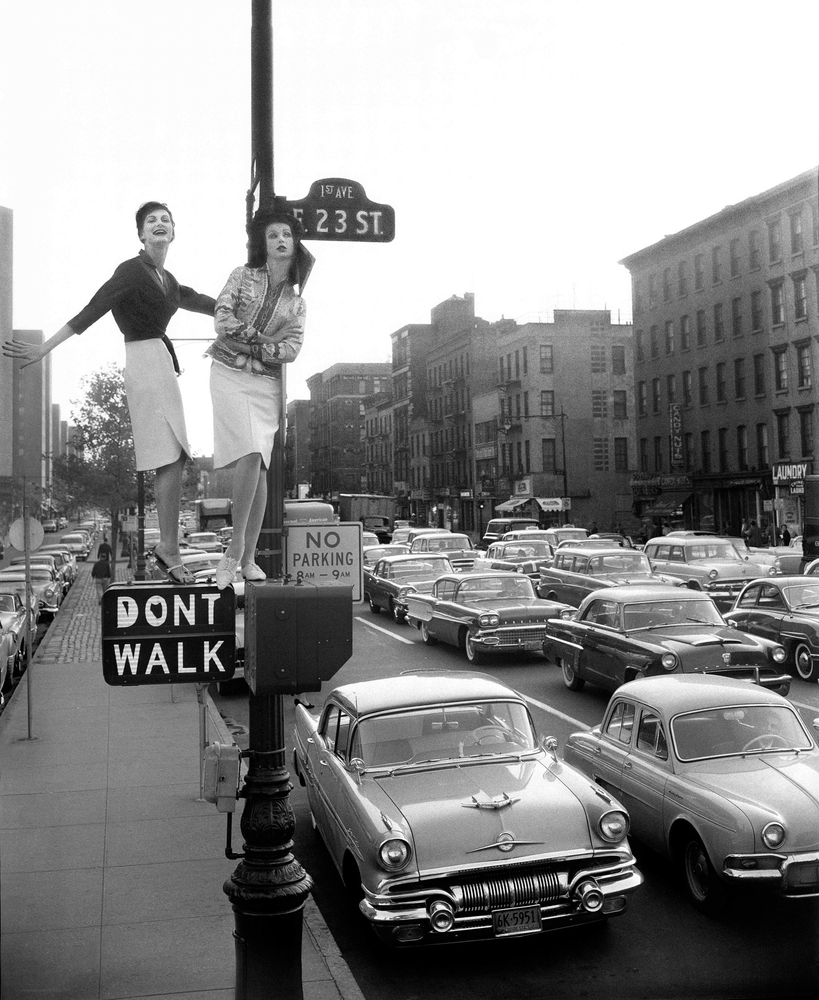

The article The Medium Is the Message is an interesting read because Marshall McLuhan
talks about how the form of communication itself affects people more than the actual
content being shared. He explains that new technology changes how we think and interact,
not just what we say. It was also interesting to see how McLuhan was somewhat, since today the
internet and social media have completely changed how people view information. The idea that
the medium shapes our world feels true when you think about how much phones and online platforms
control our daily lives, even more than the messages they carry. However I do feel that McLuhan is
perhaps a bit to nihlistic because he talks about technology and media like they completely control
how people think and live, almost like we don’t have any real choice in it. It feels like he sees
humans as just reacting to whatever new medium shows up instead of shaping it ourselves.
